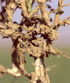

| Home |
| PULSES |
| 1. Bean Aphid |
| 2. Thrips |
| 3. Whitefly |
| 4. Green Leafhopper |
| 5. Pod Bug |
| 6. Lab-lab bugs / Stink bug |
| 7. leaf webber |
| 8. lab-lab leaf miner |
| 9. termites |
| questions |
| download notes |
PESTS OF PULSES :: Major Pests :: Termites
9. Termites: Odontotermes obesus (Termitidae: Isoptera)
Host plants – wheat, barley, sugarcane, pea, sorghum, pearl millet, maize, groundnut.
|
 |
Management
- Where the pest is of regular occurrence the soil should be mixed with endosulfan 4D or quinolphos 1.5 D or chlorpyriphos 5 D BHC or 10 D @ 35 kg/ha at the time of sowing.
- f the incidence of pest is noticed in standing crop dilute 2.5 L of endosulphan 35 EC or chlorpyriphos 20EC in 5 L of water and mix it with 50 kg of soil and broabcast even in 1 ha followed by light irrigation.